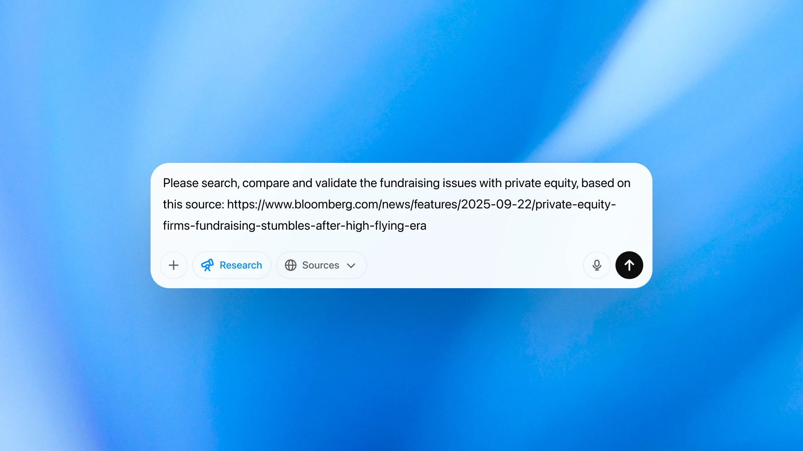

OpenAI para investigación
Haz una investigación a nivel de experto con un solo mensaje
Reúne, analiza y sintetiza información más rápido con herramientas de IA que generan informes estructurados y con citas en minutos, no en días.

Encuentra la solución adecuada
Compara productos que respaldan la investigación en todos los niveles,
desde la exploración rápida hasta la elaboración de informes detallados.

ChatGPT
Tu asistente de investigación en el chat.
- Efectúa revisiones de literatura, resume artículos o sintetiza ideas de archivos PDF y datos cargados.
- Referencia las fuentes directamente y exporta notas estructuradas al instante.

Investigación a fondo
Investigación avanzada para preguntas complejas en ChatGPT.
- Busca y analiza información de cientos de fuentes en línea.
- Usa el razonamiento de varios pasos para comparar y validar las conclusiones.
- Genera informes detallados respaldados por citas.

Recuperación de conocimiento
Respuestas con citas en tiempo real.
- Crea asistentes de conocimiento impulsados por los datos y el contenido de tu empresa.
- Ofrece respuestas transparentes con referencias claras a las fuentes.